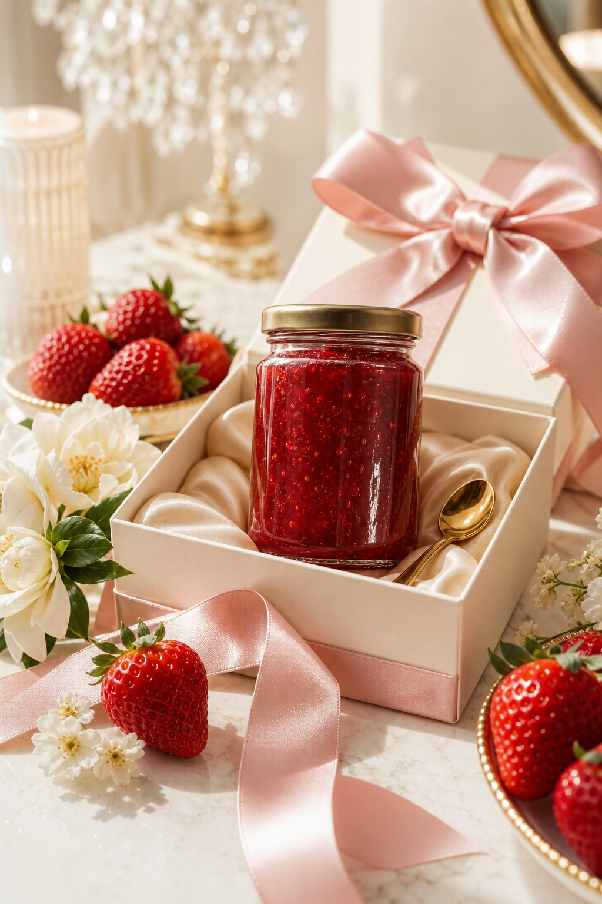
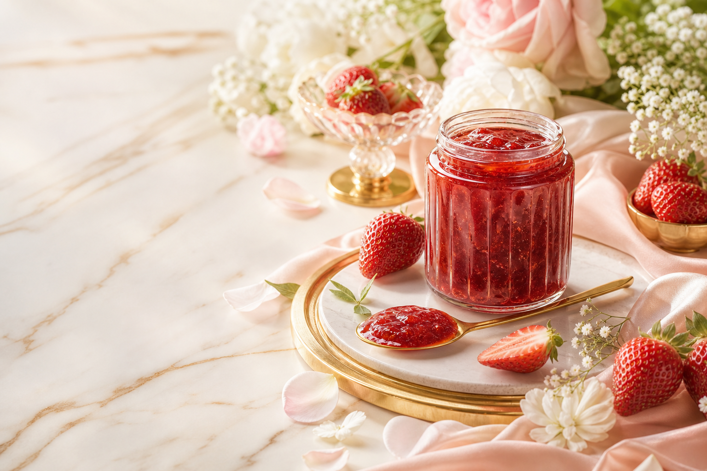
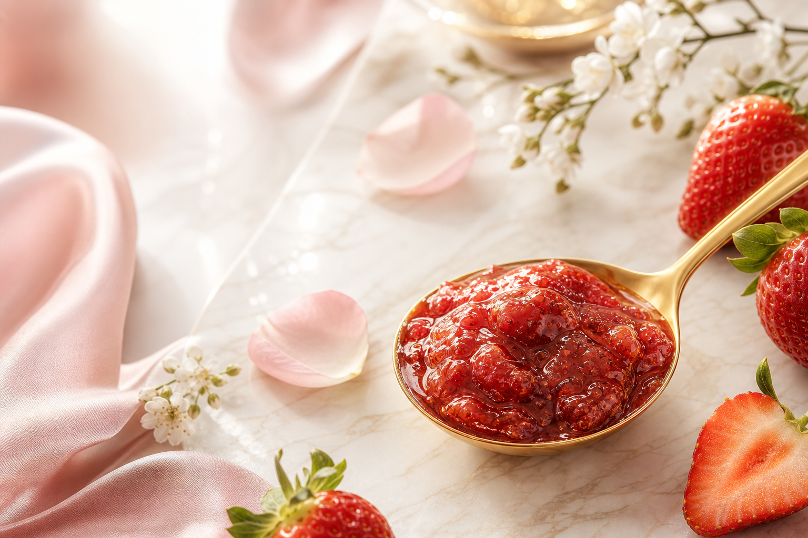

Deep fruit
A rich sweetness that remains refined, never heavy.
Premium Kotoka Confiture
A refined Japanese strawberry confiture
made exclusively with Kotoka strawberries
from Nara.
Sweetness, acidity, and aroma, preserved in every spoonful.
Chapter 01
Kotoka is a premium strawberry from Nara, known for its deep sweetness, bright acidity, and elegant aroma.
Kotoka no Shizuku transforms that short seasonal pleasure into a confiture that can be enjoyed all year round.

Chapter 02


A rich sweetness that remains refined, never heavy.
A clear acidity that gives the red fruit a graceful edge.
A quiet fragrance that opens with every spoonful.
Chapter 03
This is a crafted expression of Kotoka, designed to draw out a depth of flavor that differs from eating the fruit fresh.
Made without preservatives, with vanilla essence used only as flavoring, and finished at around 35 degrees Brix.
Chapter 04
Created for travel, gifting, department stores, duty-free shops, and special occasions, Kotoka no Shizuku carries the value of Nara in a single jar.
Online / Contact
Online purchase information, gift inquiries, and retail availability will be announced here.